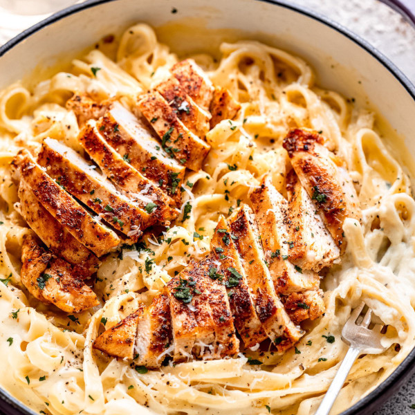

Chicken Alfredo

Description
A classic Italian dish known for its creamy alfredo sauce. This recipe
has you making the sauce and chicken from scratch, but you can swap
in a jar of premade sauce and a rotisserie chicken for a quick and
easy anytime meal.
Ingridients
- 12 oz Fettucine noodles
- 1/2 cup salted butter
- 3 cloves minced garlic
- 8 oz cream cheese
- 1 1/2 cups heavy cream
- 8 oz shredded parmesan cheese
- 1/4 tsp salt
- 1/4 tsp black pepper
- 1 tbsp fresh chopped parsley
Steps
- Cook pasta in a large pot of salted water, according to package
instructions. Once pasta is tender, reserve 1 cup of the pasta
water, then drain and set aside.
- Meanwhile, pound chicken breasts to an even thickness using a
rolling pin or heavy pot. Season both sides with salt, pepper,
paprika and Italian seasoning.
- Heat a large skillet over medium-high heat and add in the olive
oil. Cook chicken on both sides for 3 to 5 minutes, until the
chicken is browned and cooked through (165 degrees F). Remove
chicken from pan and place on a plate, lightly covered with
foil to rest at least 5 minutes.
- To the same skillet that was used to cook the chicken, reduce
heat to medium and add in the butter. Once melted, add in the
minced garlic and cook until fragrant, about 30 seconds.
-
Add in the cream cheese and whisk gently until cream cheese is
mostly melted into the butter. The mixture will look a little
clumpy, like cottage cheese (this is normal!).
-
Gradually pour in the heavy cream, while whisking, until the
mixture becomes smooth. Add in the parmesan cheese and stir
until melted through.
-
To the sauce, add in the cooked fettuccine noodles and toss to
coat. If needed, use the reserved pasta sauce to add more
moisture to the sauce and pasta. Season with salt and pepper.
-
Slice the chicken breast into strips and serve over the noodles.
Garnish with freshly chopped parsley and more freshly cracked
pepper. Enjoy hot!